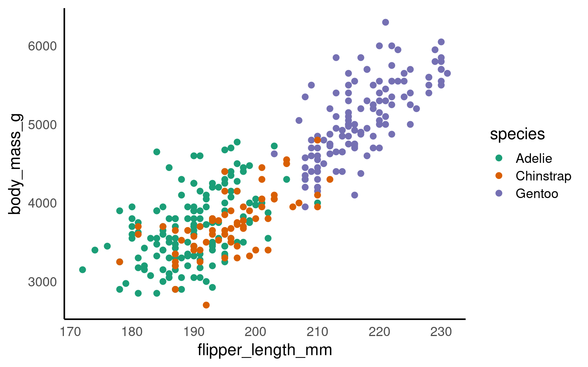
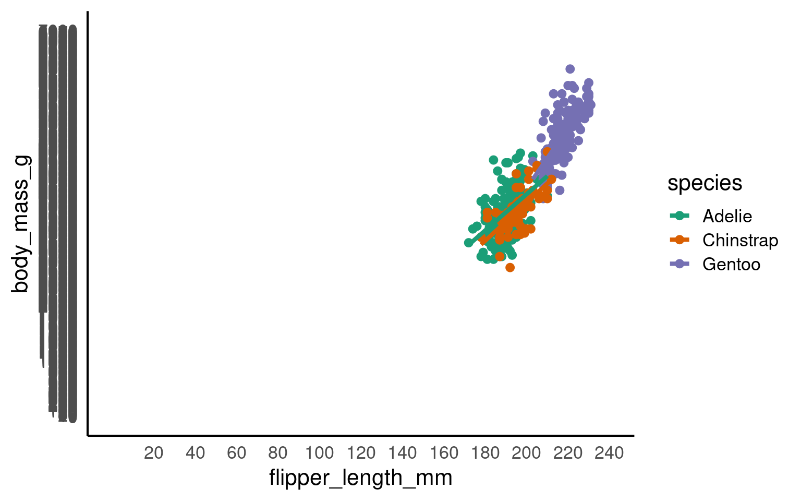
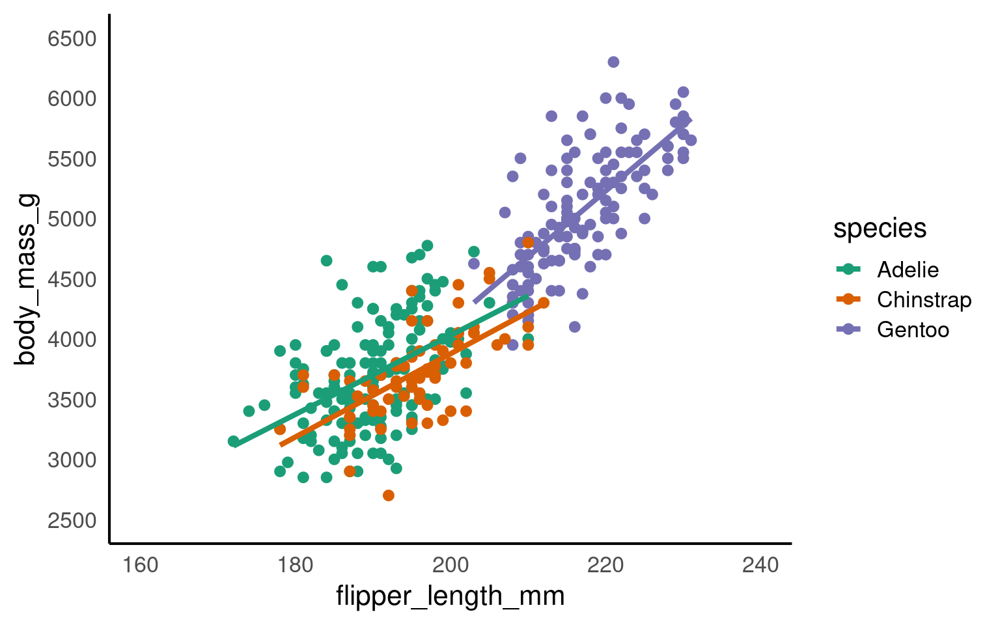
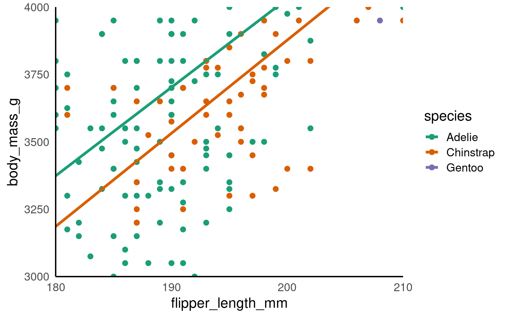
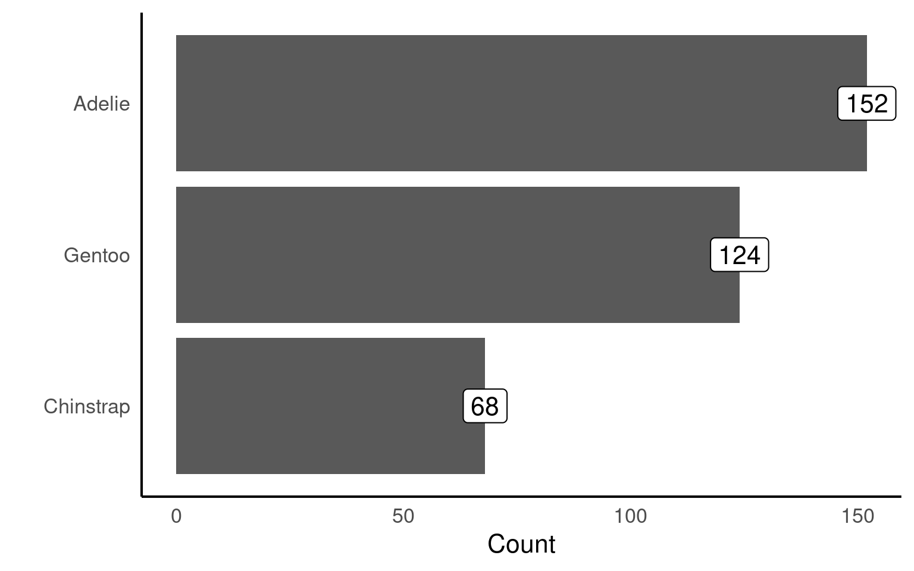
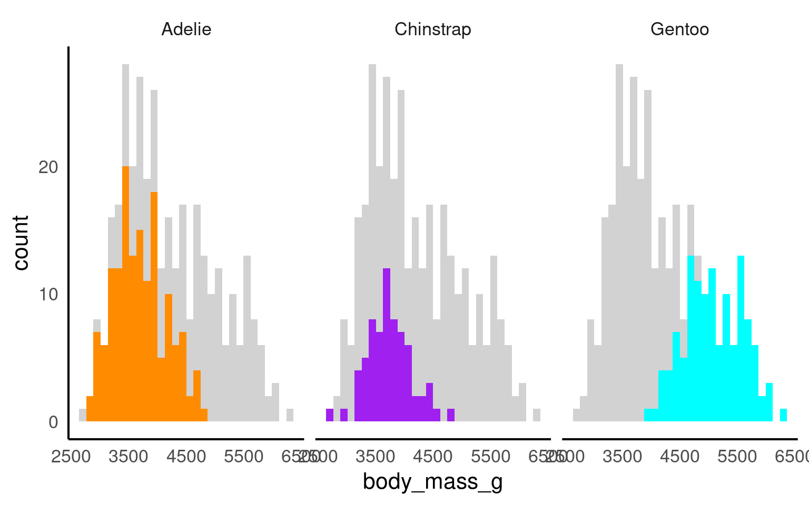
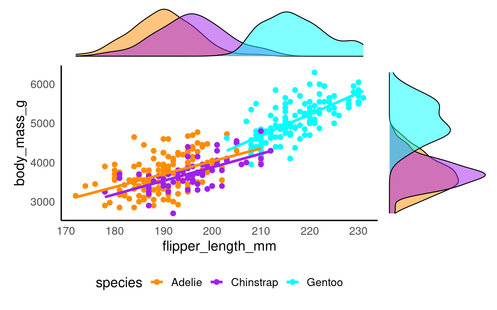

Appendix F — ggplot2
F.1 Learning Objectives
By the end of this chapter, you will be able to:
Prepare and summarise data for advanced plotting.
Control aesthetics and grouping behaviour in multilayered plots.
Use and combine a broad range of geoms, including line, text, and label.
Customise and extend colours, palettes, scales, axes, and legends.
Use facets effectively for multi-dimensional comparisons.
Arrange and enhance plots using patchwork and marginal plots.
Export and enhance visualisations with camcorder and plotly.
F.2 Colours, palettes and extensions
Colour is one of the most powerful visual cues we can use in data visualisation. In ggplot2, colours can communicate categories, highlight relationships, and guide the viewer’s attention. However, it’s also one of the most common sources of confusion and inaccessibility.
F.2.1 How colour works in ggplot2
ggplot2 applies colour in two main ways:
Mapped colour — controlled by a variable in
aes(), such ascolour = speciesorfill = species.Fixed colour — set manually outside
aes(), e.g. geom_point(colour = "blue").
Your turn
All other layers remain exactly the same as in other plots. Try adding layers to make the plot above prettier:
F.3 Choosing Effective Palettes
Colour choices can make or break your plot. Good palettes emphasise contrast, group differences, and remain readable for all audiences.
In ggplot2, colours that are assigned to variables are modified via the scale_colour_* and the scale_fill_* functions. In order to use colour with your data, most importantly you need to know if you are dealing with a categorical or continuous variable. The color palette should be chosen depending on type of the variable:
sequential or diverging color palettes being used for continuous variables
qualitative color palettes for (unordered) categorical variables:

You can pick your own sets of colours and assign them to a categorical variable. The number of specified colours has to match the number of categories. You can use a wide number of preset colour names or you can use hexadecimals.

F.3.1 Using Predefined Palettes from colorspace
The colorspace Ihaka et al. (2025) package offers curated, perceptually balanced palettes designed for clarity and accessibility.
You can select qualitative, sequential, or diverging palettes using scale_*_discrete_qualitative(palette = "*") or similar functions.

Your turn
All other layers remain exactly the same as in other plots. Try adding layers to make the plot above prettier:
F.3.2 Other palettes
F.3.3 Accessibility
It’s very easy to get carried away with colour palettes, but you should remember at all times that your figures must be accessible. One way to check how accessible your figures are is to use a colour blindness checker colorBlindness Ou (2021)
F.3.4 Guides to visual accessibility
Using colours to tell categories apart can be useful, but as we can see in the example above, you should choose carefully. Other aesthetics which you can access in your geoms include shape, and size - you can combine these in complimentary ways to enhance the accessibility of your plots. Here is a hierarchy of “interpretability” for different types of data


F.3.5 Colour Redundancy

F.4 Grouping logic
When drawing lines geom_line(), ggplot2 needs to know which points belong together.
If it cannot infer groups, it will connect every point in order of x, producing meaningless zigzags.
Let’s see how grouping works — implicitly, explicitly, and in summary form.
F.4.1 Implicit grouping via colour or fill
Discrete aesthetics such as color, fill, or linetype automatically define groups.
F.4.2 Explicit grouping
Explicit grouping defines the groups by which lines should be drawn (still in order of x) without relying on other aesthetics or implicit grouping


F.4.3 Summary trend lines
F.5 Scales, Axes and Ordering
F.5.1 Axes limits
Now, we’ll use scale_x_continuous() and scale_y_continuous() for setting our desired values on the axes.
The key parameters in both functions are:
“limits” (defined as
limits = c(value, value))“breaks” (which represent the tick marks, specified as
breaks = value:value).
It’s important to note that “limits” comprise only two values (the minimum and maximum), while “breaks” consists of a range of values (for instance, from 0 to 100).
## Set axis limits ----
penguins |>
ggplot(aes(x=flipper_length_mm,
y = body_mass_g,
colour=species))+
geom_point()+
geom_smooth(method="lm",
se=FALSE)+
scale_colour_manual(values = c("Adelie" = "#1b9e77",
"Chinstrap" = "#d95f02",
"Gentoo" = "#7570b3")) +
scale_x_continuous(limits = c(0,240),
breaks = seq(20,240,by = 20))+
scale_y_continuous(limits = c(0,7000),
breaks = seq(0,7000,by = 10))
Your turn
Pick a more appropriate set of axis breaks:
R chooses the limits and breaks for you automatically. But it is useful to know how to override this when needed
## Set axis limits ----
penguins |>
ggplot(aes(x=flipper_length_mm,
y = body_mass_g,
colour=species))+
geom_point()+
geom_smooth(method="lm",
se=FALSE)+
scale_colour_manual(values = c("Adelie" = "#1b9e77",
"Chinstrap" = "#d95f02",
"Gentoo" = "#7570b3")) +
scale_x_continuous(limits = c(160,240),
breaks = seq(160,240,by = 20))+
scale_y_continuous(limits = c(2500,6500),
breaks = seq(2500,6500,by = 500))
F.5.2 Zooming in and out
We have seen how we can set the parameters for the axes for both continuous and discrete scales.
It can be very beneficial to be able to zoom in and out of figures, mainly to focus the frame on a given section.
One function we can use to do this is the coord_cartesian(), in ggplot2.
Set the limits on the x-axis
(xlim = c(value, value))Set the limits on the y-axis
(ylim = c(value, value))Set whether to add a small expansion to those limits or not
(expand = TRUE/FALSE).
penguins |>
ggplot(aes(x=flipper_length_mm,
y = body_mass_g,
colour=species))+
geom_point()+
geom_smooth(method="lm",
se=FALSE)+
scale_colour_manual(values = c("Adelie" = "#1b9e77",
"Chinstrap" = "#d95f02",
"Gentoo" = "#7570b3")) +
coord_cartesian(xlim = c(180,210),
ylim = c(3000,4000),
expand = FALSE)
ImportantLimits vs co-ords
This IS different to setting the axis limits. coord_cartesian is like a zoom, while scale sets the plotting range.
Below we use a shortcut to scale with xlim and ylim - the trendline is now calculated only according to the visible/plotted points.
F.5.3 Axis ordering
Axis ordering plays a crucial role in helping viewers interpret data quickly and accurately.
For example, ordering categories by value can emphasize trends, such as showing which groups have the highest or lowest measurements, while random or inconsistent ordering can make comparisons confusing and obscure key insights.
By default R will order categories along the axis in alphabetical order:
F.5.3.1 Reordering manually
If we wanted to switch the order we would use the scale_x_discrete() function and set the limits within it (limits = c(“category”,“category”)) as follows:
F.5.3.2 Reordering by values
Or by using features in the forcats package:
fct_infreq()— orders by frequencyfct_reorder()— orders by another numeric variable (e.g., mean body mass)

Your turn
How could we improve the readability of this plot even further?
penguins |>
mutate(species = forcats::fct_infreq(species)) |>
ggplot(aes(x = species)) +
geom_bar()+
# Direct annotation
geom_label(stat='count', aes(label=..count..))+
# reverse order
scale_x_discrete(limits = rev)+
# Rotated axis to enhance readability
coord_flip()+
# Redundant titles removed
labs(x = "",
y = "Count")
F.6 Facets
At the point where it becomes difficult to see the trends or differences in your plot then we want to break up a single plot into sub-plots; this is called ‘faceting’. Facets are commonly used when there is too much data to display clearly in a single plot
F.6.1 Cluttered plots
In the example below it is hard to see the exact distribution of each histogram:

By making facetted panels side-by-side comparisons are made easier:
F.7 Highlighting
Using plot highlighting, such as the gghighlight package in R Yutani (2025), can be beneficial in data visualization for several reasons:
We can emphasise values over certain ranges
Emphasiese key groups
Enhance the readability of facetted plots:

F.7.1 Nested Facets
The ggh4x::facet_nested() function in the ggh4x van den Brand (2025) package is used for creating nested or hierarchical faceting in ggplot2 plots. Nested faceting allows you to further subdivide these panels into smaller panels, creating a hierarchy of facets.
library(ggh4x)
penguins |>
mutate(Nester = ifelse(species=="Gentoo", "Crustaceans", "Fish & Krill")) |>
ggplot(aes(x = culmen_length_mm,
y = culmen_depth_mm,
colour = species))+
geom_point()+
facet_nested(~ Nester + species)+
scale_colour_manual(values = c("darkorange", "purple", "cyan"))+
theme(legend.position = "none")
F.8 Patchwork
Sometimes, one plot can’t tell the whole story. patchwork Pedersen (2025) lets you combine multiple ggplots — side by side or stacked — without exporting to another program.
It’s quick, simple, and keeps everything reproducible inside R
Use
/to stack plots verticallyUse
+to align plots horizontally
library(patchwork)
p1 <- penguins |>
ggplot(aes(x=flipper_length_mm,
y = culmen_length_mm))+
geom_point(aes(colour=species))+
scale_colour_manual(values = c("darkorange", "purple", "cyan"))
p2 <- penguins |>
ggplot(aes(x=culmen_depth_mm,
y = culmen_length_mm))+
geom_point(aes(colour=species))+
scale_colour_manual(values = c("darkorange", "purple", "cyan"))
p3 <- penguins |>
drop_na(sex) |>
ggplot(aes(x=species,
fill = sex)) +
geom_bar(width = .8,
position = position_dodge(width = .85))+
scale_fill_discrete_diverging()
(p1+p2)/p3+
plot_layout(guides = "collect") 
You can add overall titles and adjust layouts easily.

F.8.0.1 Marginal plots
A marginal plot augments a two-dimensional plot (usually a scatterplot) with one-dimensional summaries along its margins—typically histograms, density curves, or boxplots.
They let readers inspect the joint relationship and each variable’s distribution simultaneously.
Conceptually:
The main panel shows how x and y relate.
The marginal panels show the univariate spread of each variable.
pal <- c("darkorange", "purple", "cyan")
# density plot of flipper length
marginal_1 <- penguins |>
ggplot()+
geom_density(aes(x = flipper_length_mm, fill = species),
alpha = 0.5)+
scale_fill_manual(values = pal)+
theme_void()+
theme(legend.position = "none")
# density plot of body mass
marginal_2 <- penguins |>
ggplot()+
geom_density(aes(x = body_mass_g, fill = species),
alpha = 0.5)+
scale_fill_manual(values = pal)+
theme_void()+
theme(legend.position = "none")+
coord_flip()
scatterplot <- penguins |>
ggplot(aes(x=flipper_length_mm,
y = body_mass_g,
colour=species))+ ### now colour is set here it will be inherited by ALL layers
geom_point()+
geom_smooth(method="lm", #add another layer of data representation.
se=FALSE)+
scale_colour_manual(values = pal)+
theme(legend.position = "bottom")
# Layout allows us to have total customisation over the position of our plots
layout <- "
AAA#
BBBC
BBBC
BBBC"
marginal_1+scatterplot+marginal_2 +plot_layout(design = layout)
F.9 Plotly
plotly Sievert et al. (2026) bridges static ggplots to interactive web graphics built on the JavaScript Plotly.js library. It preserves ggplot2’s grammar (via ggplotly()), but turns each layer into a responsive SVG/HTML element with tooltips, zooming, and panning:
library(plotly)
ggplotly(
penguins |>
ggplot(
aes(x = culmen_length_mm,
y= body_mass_g,
colour = species)) +
geom_point(aes(fill = species), shape = 21, colour = "white") +
geom_smooth(method = "lm", se = FALSE,linetype = "dashed", alpha = .4)+
scale_colour_manual(values = c("darkorange", "purple", "cyan"))+
scale_fill_manual(values = c("darkorange", "purple", "cyan"))
)F.10 Exporting safely
F.10.1 ggsave
One of the easiest ways to save a figure you have made is with the ggsave() function. By default it will save the last plot you made on the screen.
You should specify the output path to your figures folder, then provide a file name. Here I have decided to call my plot plot (imaginative!) and I want to save it as a .PNG image file. I can also specify the resolution (dpi 300 is good enough for most computer screens).
F.10.2 svg
Not exactly programmatic, but occasionally a lifesaver. If you save your ggplot image in .svg format then it becomes vectorised.
What does this mean?
Open your image in a programme like powerpoint and each element of the plot can be edited, resized or moved!